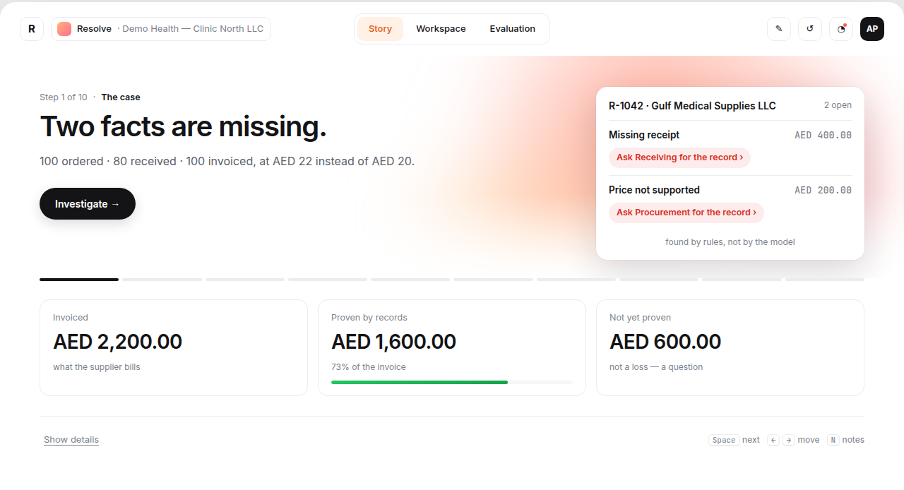
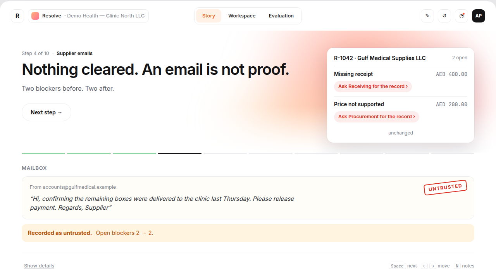
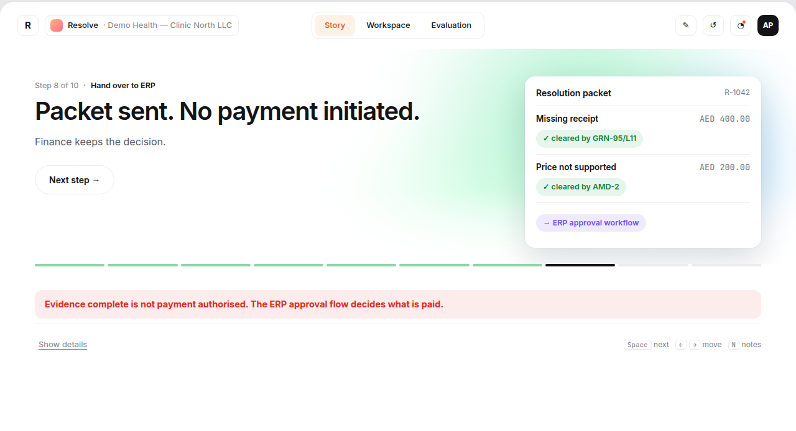

Resolve — the missing-evidence layer for accounts payable.
The ERP says “mismatch”. Someone still has to find out why, from whom, and what would close it.
Open invoice → find PO → check receipts → email the branch → chase procurement → compare again.
A receiver’s head, a supplier’s email, a procurement inbox. ERPs record outcomes, not investigations.
Ageing invoices, accruals nobody can approve, and the audit question: why did you pay this?
ASP appointed · e-invoicing live for businesses ≥ AED 50M revenue. Every finance team is opening its stack this year.
A structured invoice still cannot prove 100 boxes arrived, that AED 22 was authorised, or that the delivery wasn’t already billed.
Four authorities. Each one does exactly one thing.
Reads records, finds amendments, drafts the smallest request per blocker.
Decimal checks, tolerances, receipt allocation. Only rules clear a blocker.
Approves recipient and message. Owns the money decision.
Receives the packet in its existing approval flow. Resolve has no payment permission.

| Record | |
|---|---|
| Ordered | 100 × AED 20 |
| Received | 80 |
| Invoiced | 100 × AED 22 |
missing receipt owner: receiving · AED 400
price unsupported owner: procurement · AED 200
Found by rules, not by the model.

untrusted Supplier: “delivered, please pay.” 2 → 2 blockers.

authoritative GRN + approved amendment. Packet to ERP. No payment initiated.
Python / FastAPI · PostgreSQL · React · one structured-output model. No fine-tuning, no vector DB, no payment agent.
Documents and email are untrusted input. No tool to send, pay or change bank details exists. Injection is a permissions problem, not a prompt problem.
Prototype harness: 40 labelled synthetic cases, per-type recall / precision, rules-vs-model baseline, red-team run. Same harness runs on the customer’s cases.
| Days | What happens |
|---|---|
| 1–7 | Ten real cases with AP, receiving, procurement. Baseline and scope. |
| 8–14 | Read-only imports, two blocker checks, reviewer screen. |
| 15–21 | Shadow mode on 100 held-out cases. Incumbent on the same set. |
| 22–30 | Assisted queue, mandatory review, drafts only. Go · narrow · stop. |
Missing receipts, price amendments. UAE healthcare groups, then any multi-site buyer of goods.
New rule packs: disputes, credit notes, contract-vs-invoice. KSA and one EU e-invoicing market.
For every blocked invoice: what was missing, who owned it, what resolved it, how long. No ERP holds this.
The ask: one controller, one AP reviewer, ten blocked invoices. Thirty days to a shadow-mode result — go, narrow or stop, with numbers.
Start with ten cases →